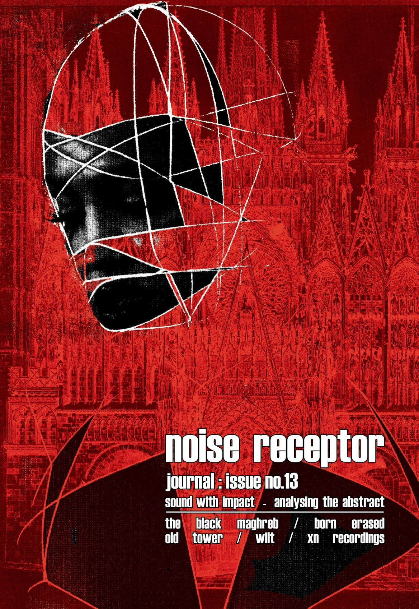

Noise Receptor Journal Issue No. 13 - Documentation of the Post-Industrial Underground
Product Information
$14.80 AUD
Book synopsis
Noise Receptor Journal Issue no. 13 illuminating the post-industrial underground. Noise Receptor Journal: sound with impact—analysing the abstract is one of the most well-respected underground zines dealing with post-industrial music, with a particular focus on dark ambient, death industrial, heavy electronics, and power electronics.
Long-form interviews with: The Black Maghreb, Born Erased, Old Tower, Wilt, Xn Recordings
Essay: Trading in the Currency of Culture: a post-industrial underground perspective
Dominion of Flesh 10 Years of Cloister Recordings Festival Report + photos
Reviews: 50+ detailed reviews (ambient/industrial/experimental/power electronics etc.)
Artwork: cover and 10+ pages of original artwork by James P. Keeler (aka WILT)—110 pages & print run of 600 copies
Noise Receptor Journal: documentation of the post-industrial underground:
Review “A wonderful journal documenting a niche of underground culture while being a cultural document itself.”